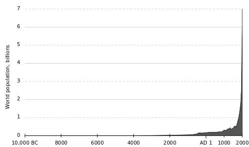

|
Hosted by the courtesy of GitHub |
The stars ASAP


 Durée du voyage intersidéral Résolutions de l'ONU en HTML Bussard Ramjet
|
DWARF : dwarf2xml
ELF : libelf examples Code presentation : ctoohtml |
|
Hosted by the courtesy of GitHub |
The stars ASAP
Durée du voyage intersidéral Résolutions de l'ONU en HTML Bussard Ramjet
|
DWARF : dwarf2xml
ELF : libelf examples Code presentation : ctoohtml |
HomeTranslation : Catherine Xerri Author : Emmanuel Azencot Creation : Sun Jan 24 16:10:26 CET 2016 Update: Sun Jan 24 16:10:26 CET 2016 |
|


|

|
"Nuestra población y nuestro uso de los recursos finitos del planeta Tierra están creciendo de manera exponencial, junto con nuestra capacidad técnica para cambiar el entorno para bien o para mal.", "Estamos en peligro de destrucción de nosotros mismos por nuestra codicia y estupidez. No podemos quedarnos mirando hacia el interior de nosotros mismos en una pequeña y cada vez mas planeta superpoblado y contaminado.". (Stephen Hawking)
La estabilidad a largo plazo requiere que la población permanezca en un nivel asequible
Somos 7,3 mil millones en 2015 y, sin embargo ya vemos los efectos de nuestra huella
La disminución de la población resuelve parte de nuestras preocupaciones
Objetivo : tamaño de la población
Les ruego a las mujeres que se pregunten por qué quieren tener bebés
Toda traducción es la bienvenida. Por favor mándame tu trabajo sin decoro y en un formato medieval , .txt, .html, .rtf, word 95 sería guay. Guardaré tu contribución anónima, si quieres.
Si tienes alguna idea ... piensátelo.
2030: The “Perfect Storm
Scenario”
No really, how sustainable are we ?
Causes effects solutions of Overpopulation
What Level of Human Population Is Sustainable?
Population and Sustainability: Can We Avoid Limiting the Number of
People?
Nine Population Strategies to Stop Short of Nine Billion
Why "Population Matters" is wrong
Why Population Matters
No hacerlo da lugar generalmente a enfermedades, al hambre, a guerras o a lo que sea. Incluso si nuestras herramientas tecnológicas pueden posponer parte de los flagelos, romper el equilibrio, se hace inevitable una crisis mayor. La Tierra está limitada, y pues los recursos disponibles. Así que el numero de humanos en la Tierra deberá, y será limitado.
Poblacion en el mundo 1800 - 2100 |
Poblacion en el mundo 10 000BC - 2000AD |
|||
| |
 |
|
 | |
| Chart from wikipedia | Chart from wikipedia |
El modelo de depredación lince-conejo muy simplificado es suficiente para entender lo engañosa que puede ser la situación real. Incluso muy simple, este modelo depredador-presa (1) ya tiene un comportamiento complejo que corresponde a una ecuación diferencial no lineal para la predicción de la población respectiva. Dicho sistema tiene dos soluciones estables. Una de ellas es la extinción de la presa seguido por su depredador. La otra solución estable es menos catastrófica, pero nunca se llega a ella ya que el sistema tiende a oscilar alrededor.
En nuestro caso, ya cazamos muchas presas empujándolas a la extinción. En la mayoría de los casos la extinción ocurre como una causa indirecta de las actividades humanas, como la agricultura (2, 3). Pero en los océanos, la pesca intensiva es la causa directa del agotamiento de los peces. Desde 1970, hemos perdido la mitad de las existencias de peces y muchas especies están cerca de la extinción (4).
1 Lotka–Volterra equations
2 SCAR Foresight Group Agriculture and environment
3 Agriculture, Ecosystems & Environment
4 Living Blue Planet Report Species, habitats and human well-being
Ballenas, sobre las aves, sobre la lluvia, sobre la capa de ozono, sobre el pescado (bacalao, atún), insectos (abejas), el bosque, sobre el clima, los arrecifes de coral, sobre la arena, y así sucesivamente. En esta etapa, tenemos suficiente trabajo científico que muestra los efectos de que la presión a nivel global. ¿ Hemos cruzado la línea roja ? Le toca a cada uno entender y eligir. En cualquier caso, el continuo crecimiento de la población mundial pronto dará la respuesta.
La presión de la depredación proviene de dos factores principales: el número de gente por el consumo individual.
Como no queremos reducir nuestro nivel de vida, no queda otra opción que la de reducir la cantidad de gente. Cualquiera que sea la solución ecológica encontrada para satisfacer nuestras necesidades, nunca será suficiente para satisfacer a las necesidades requeridas por una población creciente, que espera un alza de su nivel de vida. Por cierto, la mayor parte de los efectos observados por ahora, resulta de la actividad de una pequeña fracción de la población del mundo, en una pequeña fracción de tiempo. Esta fracción ha crecido, y ahora está también contribuyendo eficazmente a la ruina de la humanidad.
Según una extrapolacion lineal para 2100 la población mundial alcanza unos 16 mil billones de personas en la tierra. Desde hace 150 000 años, la mayor parte del tiempo, la población estaba limitada por los recursos, pero durante los últimos 200 años hemos mejorado nuestra capacidad para conseguir lo que necesitamos. Desde entonces, la población está por las nubes. Como resultado, en lugar de disfrutar de los beneficios del progreso la mayoría de los humanos todavía de que dan atrapados en la supervivencia.
World Population Growth Charts MORE Than Exponential
Chart of the Day: World Population Growth vs History of Technology
La disminución de la población resuelve gran parte de nuestra preocupación como el desempleo, la pobreza, la contaminación, la sobreexplotación, las epidemias, el tráfico, las guerras que están más o menos alimentadas por el hacinamiento. Como resultado, una buena parte del esfuerzo se echa a perder en el intento para encontrar la manera de hacer frente a la creciente población humana, incluyendo la economía, la tecnología, la organización política, la ecología y así sucesivamente.
¿ Dónde está la necesidad de producir más verduras ? Más carne ? La tribu tiene un nuevo recién llegado ! ¿ Por qué necesitamos una alcantarilla : porque hay mucha mierda a nuestro alrededor ... Ahora es como si "tuvieramos bastante comida para todo el mundo ! El problema es llevarla a donde se necesita". Hagamos algunas carreteras y telecomunicaciones para tomar pedidos.". Es por eso por lo que necesitamos una planta de energía nuclear. Su efecto invernadero ...
Por otro lado, como lo vemos con China con la política de un unico hijo, el disminuir demasiado rápido la población tiene sus inconvenientes. El fenómeno más importante " 4-2-1 fenómeno" es cuando uno solo tiene que cuidar a 2 padres y 4 abuelos. Este es la pesada herencia que tenemos que pagar si queremos que nuestros hijos vivan mejor que nosotros. En realidad, hay muchas razones para caer en estos dos esquemas de Ponzi ( 1 , 2 ) si los combinamos con una tragedia de los bienes comunes ( 3 ). Caminar por el otro lado es difícil.
Desde el punto de vista económico el " 4-2-1 fenómeno ", debe ser templado por el nivel que productividad de los humanos ha logrado. Con respecto al sector artístico, por ejemplo, podría padecer, pero no hay ninguna razón para temer ya que hay muchas personas subempleadas o empleadas en actividades no vitales: el golf, el póquer, la droga, el boxeo y muchos más que se podrían reducir antes de morir de hambre. Tecnología y economía liberal nos hacen muy eficientes, es muy poco probable que caigamos sólo por falta de maniobras.
No existe vínculo especial entre el PIB per cápita y el volumen de la población. Ni Japón ni Europa parecen sufrir ningún daño teniendo en cuenta un rápido o suave decrecimiento. Es cierto que tenemos muy poca experiencia en esta dirección. Las casas ya están construidas; si disminuye la población no hay necesidad de construir unas nuevas.
1 El primero procede de los padres que se fian de los niños.
2
Entre sus tácticas primarias, la demografía de Ponzi se nutre del miedo a la disminución de la población y el envejecimiento. Sin una población joven y creciente,
estamos condenados a convertirnos en una nación enfrentada a la ruina financiera y una pérdida del poder nacional ".
3
El crecimiento demográfico y la "tragedia de los comunes"
Como nunca dirigimos a la población como una causa y siempre tratamos de curar las consecuencias, la población mundial en general está fuera de control. Hecha un ojo al Proyecto del Milenio de la ONU : Nada sobre la planificación familial, nada de educación sexual, ni una palabra sobre la anticoncepción. Esto resume nuestra política mundial sobre el tercer mundo. Realmente la mayoría de los lugares del mundo, especialmente los países de altos ingresos, conocen una fuerte superpoblación. Es lo mismo por todas partes: el desarrollo, el crecimiento, la seguridad y los políticos están en la cumbre de las noticias.
Incluso los pocos esfuerzos que se intentaron hasta ahora en China e India están calumniados ( 1 , 2 , 3 , 4 , 5 , 6 ) y contradichos por la libertad de las mujeres y la problematica del retiro. Compara las pirámides de las edades de Bangladesh y la de India con la de Pakistán donde la planificación familial es débil. Aunque eso no es perfecto, al menos, se están preocupando de un problema real.
El silencio en torno a la preocupación por el volumen de la población es tan profundo que la gente realmente no sabe qué pensar. La mayoría de entre nosotros tendría en cuenta las orientaciones de la sociedad. ¿ Por qué no decir que no necesitamos a bebés y los motivos para ello ?
Oscilar entre el optimismo y el pánico no hace coherente una política. Sería mejor convenir de un objetivo de población asequible que guarde unos márgenes y trate de llegar al mismo, sin guerra.
Hay muy pocas publicaciones ( 7 , 8 , 9 ) que tratan de averiguar lo que debería ser la población óptima. Aparte de la supervivencia también hay que preguntarse acerca de cuántos queremos estar en unos cien años o en mil años. Qué vamos a hacer en Marte? El Edén o las Marsvelas ?
1 India’s Lethal Birth Control
2 Women’s deaths reflect mindset from 1975 state of emergency
3 Birth Control: Still Sterilization
4 First one child, now two - but China's birth control policy is here to stay
5 Violent population control continues in China
6 Population Control Programs China
7 How Many People Can Earth Support ?
8 Sustainable Population Levels Using Footprint Data
9 Optimum population
De hecho, estamos en el valle de la sombra de la muerte. "Toda existencia condicionada, sin excepción, está sujeta a la no permanencia", dice Buda, "El mundo sufre de la muerte y la decadencia". Haga lo que haga esté seguro de que sus hijos van a sufrir, temerán por la muerte y morirán.
El deseo, el amor, la confianza, la seducción, la familia, la sexualidad, apuntan a un solo objeto : los niños. Aunque no sea especialmente su deseo, estos les condenan a tener algo que crece en su vientre por él que van a peligrar mientras que les mantienen en una camisola química.
Nos vemos obligados a hacerlo por un proceso de selección darwiniana que modela nuestra química y más tarde nuestra mente desde hace miles de millones de años que hacen que el proceso de la procreación un experimento de droga maravilloso.
Delante de nuestros padres y antepasados pensamos que tenemos una deuda porque no existiríamos si ellos no hubiéramos hecho exactamente lo que hicieron. La interrupción de esta cadena es una idea insoportable y actua en silencio como cartas en cadena.
Tener hijos sirve también la necesidad de tener a alguien que tenga la posibilidad de hacerse cargo de nosotros cuando mayores. Es una especie de retorno de la inversión impuesto a nuestros hijos que no tienen más remedio que hacer lo mismo, simplemente como una pirámide Ponzie.
Los niños también pueden ser un modo de asentar su posición social. Cualquiera que sea el tipo de mejora que espera, siempre tendrá su precio. Por lo general. atentara a su libertad y en ocasiones puede ser tan pesado como arriesgar su vida o tener que pelear para sobrevivir luchando por ella y por la de sus hijos hasta la muerte.
Por favor senoras, no se sientan obligadas.
Gracias a kat, nat y fanfan por haberme escuchado y leido.
|
Hosted by the courtesy of GitHub |
The stars ASAP
Durée du voyage intersidéral Résolutions de l'ONU en HTML Bussard Ramjet
|
DWARF : dwarf2xml
ELF : libelf examples Code presentation : ctoohtml |
{kind=link}